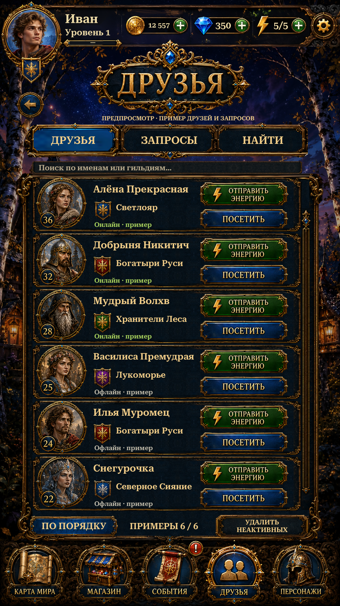

Original joined tab rails and central sapphire, five source guild flags and source-derived outer list curls/trim. Live localized tab selection, search, sorting, shared header and original-lettered action/footer controls are preserved.
Actual Unity captures below. Friends, requests, guilds and presence are examples. Online friend actions are not connected and show an explanation. Search and sorting work locally. English uses live labels. Shared scenery, reconstructed frames and live fonts differ from the original.

Actual Unity Play Mode capture, isolated save and simulated screen/safe area.
Implementation and checks · Remaining differences · Alpha inspection